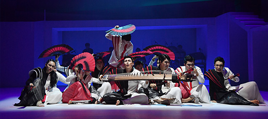

#공연소개
K-Musical On Air Vol.1
뮤지컬 <팬레터>
생중계 : 2020.08.31(월) 20시 부터
“안녕. 나의 빛, 나의 악몽”
1930년대 경성. 경성에서 잘 나가는 사업가인 ‘세훈’은 카페에서 쉬던 중 놀라운 이야기를 듣는다. ‘히카루’라는 죽은 여류작가의 소설이 출간된다는 사실이다. 게다가 알려지지 않았던 그녀의 진짜 정체까지 밝혀진다고 한다. ‘세훈’은 유치장에 갇혀있는, 문인들의 모임 ‘칠인회’ 멤버이자 소설가인 ‘이윤’을 찾아가 그 출간을 중지해달라고 부탁한다. ‘이윤’은 정확한 이유를 밝히지 않으면 그럴 수 없다고 말하며, ‘히카루’의 애인이었던 소설가, ‘김해진’이 그녀에게 남긴 마지막 편지까지 품에서 꺼내 자랑한다. ‘세훈’은 자신이 그 편지를 꼭 봐야 한다고 말하며, ‘히카루’에 대한 이야기를 꺼내는데…
▶ 출연진 : 김종구, 문태유, 소정화, 정민, 양승리, 이승현, 권동호

K-Musical On Air Vol.2
뮤지컬 <여신님이 보고계셔>
생중계 : 2020.09.01(화) 20시 부터
“어른들을 위한 아름다운 동화 같은 뮤지컬, 여신님이 보고 계셔”
한국전쟁이 한창이던 당시, 국군대위 한영범은 인민군 이창섭, 류순호, 변주화, 조동현을 포로수용소로 이송하라는 특별임무를 부여 받고 부하 신석구와 함께 이송선에 오른다. 그러나 포로들은 배위에서 폭동을 일으키고, 폭동 중에 기상악화로 고장 나 버린 이송선 때문에 여섯 명의 병사들은 무인도에 고립 된다. 유일하게 배를 수리 할 수 있는 순호는 전쟁후유증으로 정신을 놓은 상태. 생존 본능만 남겨진 채 병사들은 점점 야만적으로 변해 간다. 그 와중에 인질이 된 영범은 악몽에 시달리는 순호에게 여신 이야기를 만들어 들려 주고, 순호는 여신님에 빠져 안정을 되찾아 간다. 이에 남북한군사들은 순호를 변화시키 기 위해 함께 ‘여신님이 보고 계셔 대 작전’을 펼치기로 하고, 가상의 여신님을 위한 공동규칙을 세우는데… 살아남기 위해 그들이 만든 신비의 여신, 과연 그들은 여신님과 함께 무사히 살아갈 수 있을까?
▶ 출연진 : 서경수, 박준휘, 윤석원, 안지환, 조풍래, 진태화, 이지숙
K-Musical On Air Vol.3
뮤지컬 <적벽>
생중계 : 2020.09.02(수) 20시 부터
“역사상 가장 위대한 전투, 적벽대전을 판소리와 무용을 통해 더 화려한 무대로 만나는 공연!”
위, 한, 오 삼국이 분립하고 황금권자를 차지하기 위한 쟁탈전이 난무한 한나라 말엽. 유비, 관우, 장비는 도원결의로 형제의 의를 맺고 권자를 차지한 조조에 대항 할 계략을 찾기 위해 제갈공명을 찾아가 삼고초 려 한다. 한편 오나라 주유는 조조를 멸하게 할 화공을 펴기 위해 전전긍긍하는데, 때마침 그를 찾아온 책사 공명이 놀랍게도 동남풍을 불어오게 한다. 이를 빌어 주유는 화공으로 조조군에 맹공을 퍼붓고, 조조는 아무런 반격도 하지 못한 채 적벽에서 크게 패하고 만다. 백만 군을 잃고 도망가는 조조를 가로막는 것은… ‘바람이 불이 되어 적벽에서 춤을 추다..!’
▶ 출연진 : 안이호, 이상화, 정지혜, 김은경, 김현호, 황보나, 한진수, 강나현, 김민국, 한승호,최정원, 임지수, 황규철, 김하연, 신예주, 엄지, 김연겸, 이진주, 전효정, 이세영
- 
K-Musical On Air Vol.4
뮤지컬 <더픽션>
생중계 : 2020.09.03(목) 20시 부터
“한 줄의 글로 세상을 바꿀 수 있다.”
1932년 미국 뉴욕, 소설과 현실이 뒤집히는 사건이 발생한다. 작가 그레이 헌트의 연재소설 <그림자 없는 남자> 속 주인공 블랙이 현실에 등장한 것이다. 블랙은 범죄자를 살해하는 살인마… 그의 소설 속 범행이 현실에 그대로 재현되면서 사람들은 또다시 블랙과 작품에 열광하게 된다. 그러던 중 작가의 마지막 소설이 발표되고 그 소설의 결말대로 작가가 죽음을 맞으면서 이야기는 시작된다. 살인마 블랙과 작가 그레이의 관계에 대해 의문을 품게 된 경관 휴는 사건의 진실을 파헤치기 위해 소설의 작가 그레이와 그의 담당 기자 와이트를 조사하는데... ‘.. 현실의 삶이란 때때로 한편의 소설 보다 소설 같으며 한 사람은 하나의 이야기로 남는다.’
- * 2016 한국콘텐츠진흥원 창의인재동반사업 창작지원프로젝트 ‘데뷔를 대비하라’ 선정
- * 2017 대구국제뮤지컬페스티벌 Musical Seed(창작지원작)선정
- * 2018 KT&G상상마당 창작극 지원사업 ‘상상 스테이지 챌린지’선정
▶ 출연진 : 박유덕, 박정원, 안지환